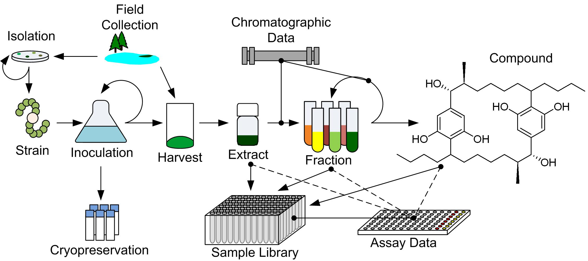

Main Table of Contents | Find Help | Search Help
Introduction & Features
The CYANOS database system was developed to facilitate data management and mining for natural product drug discovery efforts. This User's Guide provides information on basic usage, e.g. add and view data, of the
CYANOS database. Information on the design and implementation of the CYANOS database can be found in the Developer's Guide. The Developer's Guide also provides information for creating SQL queries
used in report generation and data mining as well as information on adding features to and creating programs for the CYANOS database. The code for this system is freely available and has been released under the Illinois Open Source license.
Table of Contents
- Features
- Implementation

Overview of the CYANOS data objects and their relationships.
The CYANOS database allows one to manage data concerning field collections, culture information, extractions, chemical separations, and bioassay data. Currently, the following information can be managed for each of the following data types.
- Field Collections
- Allowed Attributes: date, collector, location, geographic coordinates, project code and collection notes
- Child objects can include: isolations and harvests
- Field Isolations
- Allowed Attributes: date, isolation type, media, parent collection, parent isolation (if exists), project code and isolation notes.
- Child objects can include: isolations and strains
- Strains
- Allowed Attributes: strain ID, culture source, date added, date removed, removal reason, culture status, Latin binomial, default media, project code and notes.
- Child objects can include: inoculations, cryopreservations, harvests, samples and bioassay data.
- Strains can also link to compounds and separations via sample information.
- Inoculations
- Allowed Attributes: strain ID, creation date, media, volume, project code, fate, removal date and notes.
- Child objects can include: inoculations, cryopreservations and harvests.
- Harvests
- Allowed Parents: inoculation or field collection
- Allowed Attributes: strain ID, harvest date, preparation date, cell color and type, cell mass, media volume, project code and notes.
- Child objects can include: samples.
- Materials
- Materials are the base for all substances in CYANOS.
- Allowed Attributes: strain ID, date, label, initial amount (in grams), project code and notes.
- Extracts can store extract information, e.g. source harvest, extraction type, solvent, and method.
- Fractions can link to parent separations
- Child objects can include: samples and separations.
- All materials records can link to one or more compound records.
- Samples
- Samples are small portions of materials that may be stored or sent to collaborators.
- Samples are organized into sample collections, which can be organized into libraries.
- Allowed Attributes: parent material ID, strain ID, date, label, default unit, concentration, sample collection, location, project code and notes.
- Transaction histories can be stored detailing date, amount, object link and notes.
- Separations
- Allowed Attributes: date, stationary phase, mobile phase, method and notes.
- Separations link to source materials and fractionation products.
- Compounds
- Allowed Attributes: compound ID, name, molecular formula, SMILES string, formula weight, monoisotopic weight, CML structure and notes.
- Compound records can link to materials and separations (with retention time).
- Bioassays
- Allowed Attributes: assay ID, target, date, activity thresholds, unit of measure, project code and notes.
- Assay data can include: strain ID, sample serial number, location on plate, concentration, activity and standard deviation.
Return to table of contents
The
software for CYANOS was developed using standard SQL and web application server technologies to create a collaborative data
management environment. The core of CYANOS is an SQL server, typically MySQL. The creation of a single, accessible repository of information allows members of a team to always have the most current data without the need to share files. Along with the MySQL database, a web-based interface was created using industry standard web
application server technologies, i.e. Java 1.5 and Apache Tomcat 5.5. This web application platform can be installed on a variety of operating system platforms, e.g. Windows, Linux, UNIX and Mac OS X, and can be accessed using a standard web browser. Thus, installation of the CYANOS software only needs to occur on a designated database server and no additional software need to be installed on a client workstation.
Return to table of contents
Main Table of Contents | Find Help | Search Help